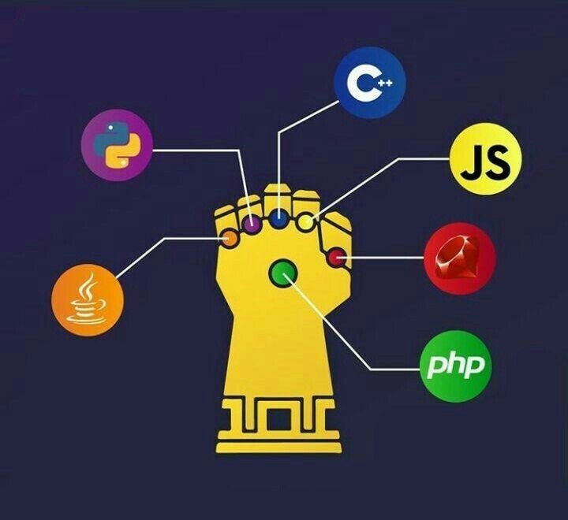
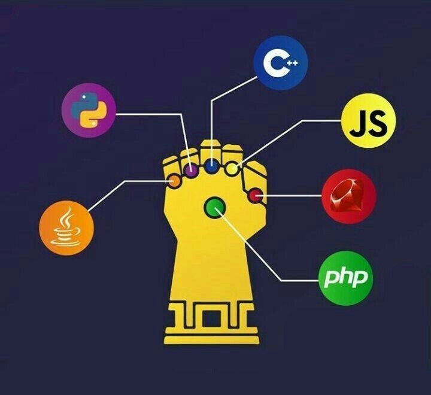

Alessandro Emanuel Gutiérrez Boc, nació el 20 de marzo del año 2005, en el hospital San Juan de Dios, en el país de Guatemala, hijo de Luis Adolfo Gutiérrez Vicente y Sussan Mishell Boc Gómez de origen guatemalteco. El y su única hermana Angélica Mishell Gutiérrez Boc se criaron en la Ciudad de Guatemala, zona 6 de Mixco en pequeña colonia llamada “El Milagro”.
Comenzó sus estudios a la edad de 6 años en el Instituto “Belén del Milagro”, continuo con sus estudios de primaria y básicos en el mismo establecimiento. Continuo sus estudios a en el año 2021 en “Centro Educativo Técnico Laboral KINAL”, en el cual gracias a las buenas bases que llevaba del instituto anterior no mostró dificultad al acoplarse al nivel del actual.
En este instituto se encuentra estudiando su carrera en “Perito Técnico en Informática”, en el primer año se adentró al mundo de las telecomunicaciones en el cual, obtuvo un título (CCNA I) de la empresa “CISCO”, en el segundo año se adentró más a fondo a los lenguajes de programación, C++, Java, Java Script etc., también conoció el mundo de las bases de datos y trabajo con el sistema de gestión de datos (MySQL) y finalizando el año empezó con el desarrollo y creación de páginas web con la ayuda de (HTML 5) y (CSS3).
En este instituto se encuentra estudiando su carrera en “Perito Técnico en Informática”, en el primer año se adentró al mundo de las telecomunicaciones en el cual, obtuvo un título (CCNA I) de la empresa “CISCO”, en el segundo año se adentró más a fondo a los lenguajes de programación, C++, Java, Java Script etc., también conoció el mundo de las bases de datos y trabajo con el sistema de gestión de datos (MySQL) y finalizando el año empezó con el desarrollo y creación de páginas web con la ayuda de (HTML 5) y (CSS3).
En este instituto se encuentra estudiando su carrera en “Perito Técnico en Informática”, en el primer año se adentró al mundo de las telecomunicaciones en el cual, obtuvo un título (CCNA I) de la empresa “CISCO”, en el segundo año se adentró más a fondo a los lenguajes de programación, C++, Java, Java Script etc., también conoció el mundo de las bases de datos y trabajo con el sistema de gestión de datos (MySQL) y finalizando el año empezó con el desarrollo y creación de páginas web con la ayuda de (HTML 5) y (CSS3).
Yo considero, que tengo las siguientes habilidades: Soy muy inteligente y sobre todo ordenado, me gusta ser responsable y dedicado en mis diferentes actividades, me gusta ampliar mis conocimientos informándome un poco mas acerca de los temas en todos los medios a mi alcance, me gusta leer y practicar diferentes ejercicios para cuidar mi salud, aprendo de la vida las cosas prácticas como manejar vehiculos, nadar, cocinar, y soy tolerante y trato de resolver los problemas sin entrar en conflictos.
 
